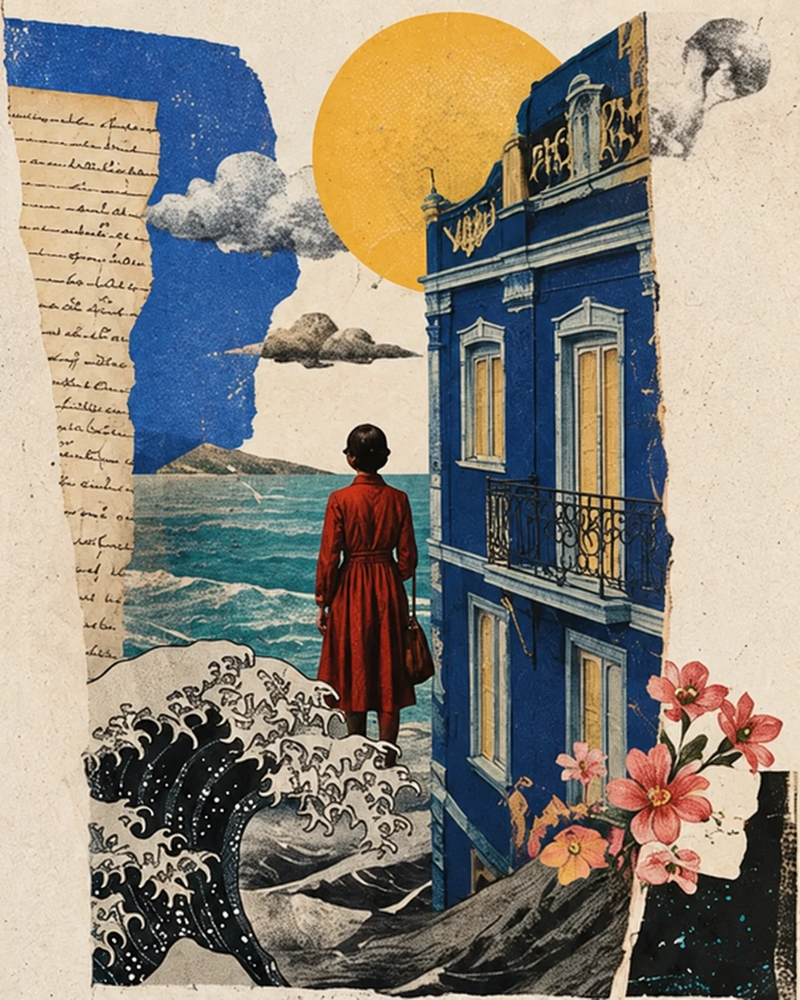

TOOL · CURATION · AI
Radar de Curadoria
A configurable tool for collecting, analyzing and organizing web information. I conceived its logic, criteria and four connected modules, with AI-assisted development.
WRITING · RESEARCH · EDITING
I work with words in different formats, from journalism and brand content to editorial curation, audio and artificial intelligence.
Explore my work ↘
01 / SELECTED WORK
TOOL · CURATION · AI
A configurable tool for collecting, analyzing and organizing web information. I conceived its logic, criteria and four connected modules, with AI-assisted development.

PRODUCT · E-COMMERCE · EDITING
Product copywriting, editing and AI-assisted content review. Editorial judgment applied to clear, consistent catalog information, from descriptions to usage instructions.

JOURNALISM · REPORTING
An article on research, social life and homosexuality in rural Rio Grande do Sul, published in Revista Arco.

NEWSLETTER · EMAIL
My idea to bring technical documentation to a wider audience grew into a space for communication and connection during the pandemic.


LANDING PAGES · BLOG POSTS · SOCIAL MEDIA
Articles and pages that introduce products, explain services and communicate with different audiences.

TRANSMEDIA JOURNALISM · AUDIO/PODCAST
A transmedia journalism project about the stories of people living with mental illness, bringing together a podcast, curated content and street posters.
Explore the projects to read original pieces and listen to the podcast. Original work samples are in Portuguese.
02 / HOW I WORK
Understand the subject, sources and audience before writing.
Organize the information and define what each piece needs to achieve.
Create content, formats and solutions, exploring ideas and adapting language to each context.
Review the writing for clarity, accuracy, consistency and quality.

03 / ABOUT ME
My name is Maria Helena, but you can call me Nina.
I hold a Journalism degree from UFSM and a postgraduate specialization in Brazilian Literature from UFRGS. My experience spans product content, brand communication, journalism, newsletters and audio. I enjoy researching, writing and finding a way to tell a story or explain something to the person on the other side.
Since 2021, I have worked as a Content Writer and Editor at Beleza na Web, part of Grupo Boticário. I work with product information, brand voice and critical review of AI-generated content. The needs I encountered in this role led to Radar, a curation and analysis tool that I conceived and developed with AI support.
I have also worked on campaigns, B2B content, SEO and personal projects. I am curious: I enjoy researching, learning and understanding why things work the way they do. I always thought creativity was my greatest strength. Today, I realize that what interests me is solving problems.
04 / LET’S TALK
For job opportunities, editorial projects and requests for work samples:
ninaspaniak@gmail.com ↗